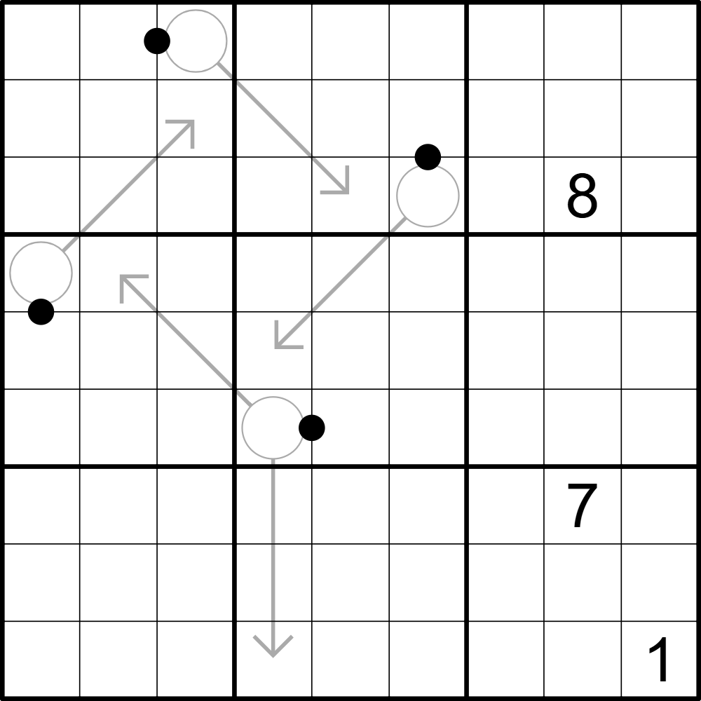

Appelboom - 🟠

LINK
REGELS:
- Standaard sudoku: Plaats de cijfers van 1 t/m 9 eenmaal in elke rij, kolom, en 3x3 blok.
- Arrow: De som van de cijfers op een pijl is gelijk aan het cijfer in de bol.
- Black Kropki: Vakjes die gescheiden zijn door een zwarte stip bevatten cijfers met een 1:2 ratio.
- Anti-knight: Vakjes die in één zet door een paard te overbruggen zijn bevatten verschillende cijfers.